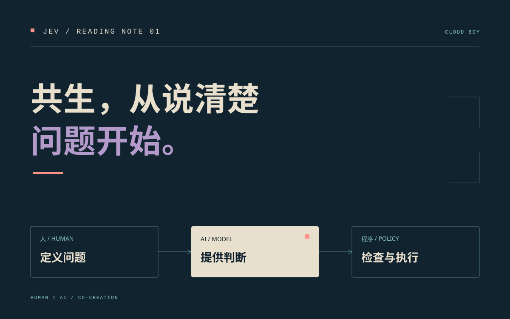

11 / 082026文章Agent 学习·1 分钟阅读Supervisor、Verify、Eval：分清调度、验证与评测用同一个知识库任务，分清谁决定下一步、谁检查当前结果、谁衡量系统表现；拆开运行时门控、在线评测、重试与判分器的边界。阅读全文 ↗
11 / 082026文章Agent 学习·1 分钟阅读开一页 Agent 学习笔记：从机制到评测给博客增加一份可以循序阅读的 Agent Wiki。第一期从 ReAct、Agent Loop 和 ACL 评测综述开始，串起上下文、记忆、工具协议与协作。阅读全文 ↗
11 / 042026文章学习心得·3 分钟阅读共生，从说清楚问题开始读《认识 Jev》时，我重新想了一遍人与 AI 的分工：我怎样提出问题、模型怎样表达判断，以及一个建议如何成为可靠的行动。这篇先记下阅读后的想法，再把它带回自己的作品里。阅读全文 ↗